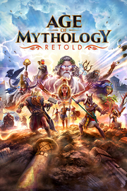

Age of Mythology: Retold
Detalles
|  | |
| Tiempo de juego | No Jugado |
| Última actividad | Nunca |
| Añadido | 11/13/2024 0:35:38 |
| Modificado | 11/13/2024 1:05:41 |
| Estado de finalización | No Jugado |
| Librería | Playnite |
| Fuente | PORCHE |
| Plataforma | PC (Windows) |
| Fecha de lanzamiento | 9/4/2024 |
| Puntuación de la Comunidad | 87 |
| Puntuación de la Crítica | 83 |
| Puntuación de usuario | |
| Género | Estrategia |
| Desarrollador | CaptureAge Forgotten Empires Tantalus Media Virtuos Games World's Edge |
| Editor | Xbox Game Studios |
| Característica | Cloud Saves Compat. Parcial Con Mando Cooperativo Cooperativo En Línea Incluye Editor De Niveles Jcj Jcj En Línea Logros De Multijugador Multijugador Multiplataforma Préstamo Familiar Un Jugador |
| Enlaces | Punto de encuentro Discusiones Guías Noticias Página de la tienda PCGamingWiki Logros |
| Tag | 3D Buena trama Construcción de bases Cooperativos Cooperativos en línea De arriba a abajo Editor de niveles Estrategia ETR ETR de acción Fantasía Gestión de recursos JcE JcJ Magia Mitología Modificables Multijugador Tiempo real Un jugador |
Descripción
De los creadores de la galardonada franquicia «Age of Empires», «Age of Mythology: Retold» va más allá de la historia y te transporta a una época mítica de conflictos entre los dioses, los monstruos y los humanos. «Retold», que combina los mejores elementos del aclamado «Age of Mythology» con modernos efectos visuales y diseños de estrategia en tiempo real, es una experiencia épica e innovadora para jugadores experimentados y novatos por igual. Protege tus dominios, lidera monstruos legendarios e invoca el poder de los dioses para acabar con tus enemigos.
¿Te convertirás en un mito?
Invoca a los dioses
Elige a tus dioses de entre los panteones griego, nórdico, egipcio y atlante. Acaba con tus enemigos invocando poderosas tormentas eléctricas o terremotos devastadores e incluso al famoso dragón Nidhogg, o invoca lluvias revitalizantes y dríadas protectoras para ayudar a tu pueblo a crecer y prosperar.

Desata a los monstruos
Da rienda suelta a centauros, troles, momias y muchas criaturas más. Liderarás unidades diversas inspiradas en las grandes mitologías del mundo, desde cocodrilos engalanados con joyas que aprovechan el poder del Sol hasta los poderosos cíclopes de un solo ojo.

Un universo mitológico épico
Embárcate en múltiples campañas con un total de 50 misiones que te llevarán a través de un vasto y mítico mundo: asedia las poderosas murallas de Troya, combate gigantes en los helados páramos de Midgard y descubre los misterios de Osiris en las arenas movedizas de Egipto. Conviértete en un héroe mítico o incluso en un dios.

Mejor con amigos
Juega con tus amigos, ya sea cara a cara o enfrentados a la avanzada IA, en decenas de mapas y escenarios que se generan aleatoriamente para que puedas jugar una y otra vez. *

* Ventajas exclusivas prémium con los 7 días de acceso anticipado y el nuevo paquete de dioses disponibles con la «Premium Edition» y la «Premium Upgrade». El nuevo paquete de dioses es una exclusiva temporal y puede estar disponible en futuras ofertas. Compra la «Premium Edition» o la «Premium Upgrade» antes del 27 de agosto de 2024 para conseguir los 7 días de acceso anticipado. Las expansiones 1 y 2 estarán disponibles conforme se vayan publicando.
Age of Mythology: Retold Premium Edition
Embárcate en un viaje lúdico de ofertas de primera clase con la edición prémium de Age of Mythology: Retold. Lo hemos diseñado para ofrecer una experiencia de juego elevada tras su lanzamiento y más allá.
La edición prémium incluye el juego completo, acceso anticipado de hasta 7 días, el nuevo paquete de dioses «Frey», el paquete de retratos antiguos de deidades, la expansión 1 (expansión completamente nueva con el panteón chino) y la expansión 2 (nuevo panteón adicional). *
Juego estándar: la experiencia completa de Age of Mythology: Retold
Acceso anticipado de hasta 7 días. Accede al reino divino antes de tiempo con este exclusivo desbloqueo anticipado al juego, disponible para Xbox, Steam y PC. *
El nuevo paquete de dioses «Frey» de la edición prémium de Age of Mythology: Retold añade a Frey al panteón nórdico. Dale rienda suelta al poder del dios nórdico de la prosperidad y la fertilidad con este nuevo y exclusivo pack de dioses. Las bendiciones de Frey conseguirán que tu reinado ascienda como nunca
Paquete de retratos antiguos de deidades, un viaje nostálgico a los orígenes de la grandeza de los videojuegos. Revive los días de gloria de los videojuegos con este paquete especial, que ofrece a los jugadores la opción de usar los icónicos retratos de deidades del juego clásico que cautivaron al público de todo el mundo .
(2) futuras expansiones: Prepárate para embarcarte en nuevas sagas épicas aún sin contar con dos futuras expansiones muy esperadas y todavía por revelar. *
Expansión 1: expansión completamente nueva del panteón chino
Expansión 2: nueva expansión adicional.
¿Te convertirás en un mito?
Invoca a los dioses
Elige a tus dioses de entre los panteones griego, nórdico, egipcio y atlante. Acaba con tus enemigos invocando poderosas tormentas eléctricas o terremotos devastadores e incluso al famoso dragón Nidhogg, o invoca lluvias revitalizantes y dríadas protectoras para ayudar a tu pueblo a crecer y prosperar.
Desata a los monstruos
Da rienda suelta a centauros, troles, momias y muchas criaturas más. Liderarás unidades diversas inspiradas en las grandes mitologías del mundo, desde cocodrilos engalanados con joyas que aprovechan el poder del Sol hasta los poderosos cíclopes de un solo ojo.
Un universo mitológico épico
Embárcate en múltiples campañas con un total de 50 misiones que te llevarán a través de un vasto y mítico mundo: asedia las poderosas murallas de Troya, combate gigantes en los helados páramos de Midgard y descubre los misterios de Osiris en las arenas movedizas de Egipto. Conviértete en un héroe mítico o incluso en un dios.
Mejor con amigos
Juega con tus amigos, ya sea cara a cara o enfrentados a la avanzada IA, en decenas de mapas y escenarios que se generan aleatoriamente para que puedas jugar una y otra vez. *
* Ventajas exclusivas prémium con los 7 días de acceso anticipado y el nuevo paquete de dioses disponibles con la «Premium Edition» y la «Premium Upgrade». El nuevo paquete de dioses es una exclusiva temporal y puede estar disponible en futuras ofertas. Compra la «Premium Edition» o la «Premium Upgrade» antes del 27 de agosto de 2024 para conseguir los 7 días de acceso anticipado. Las expansiones 1 y 2 estarán disponibles conforme se vayan publicando.
Age of Mythology: Retold Premium Edition
Embárcate en un viaje lúdico de ofertas de primera clase con la edición prémium de Age of Mythology: Retold. Lo hemos diseñado para ofrecer una experiencia de juego elevada tras su lanzamiento y más allá.
La edición prémium incluye el juego completo, acceso anticipado de hasta 7 días, el nuevo paquete de dioses «Frey», el paquete de retratos antiguos de deidades, la expansión 1 (expansión completamente nueva con el panteón chino) y la expansión 2 (nuevo panteón adicional). *
Juego estándar: la experiencia completa de Age of Mythology: Retold
Acceso anticipado de hasta 7 días. Accede al reino divino antes de tiempo con este exclusivo desbloqueo anticipado al juego, disponible para Xbox, Steam y PC. *
El nuevo paquete de dioses «Frey» de la edición prémium de Age of Mythology: Retold añade a Frey al panteón nórdico. Dale rienda suelta al poder del dios nórdico de la prosperidad y la fertilidad con este nuevo y exclusivo pack de dioses. Las bendiciones de Frey conseguirán que tu reinado ascienda como nunca
Paquete de retratos antiguos de deidades, un viaje nostálgico a los orígenes de la grandeza de los videojuegos. Revive los días de gloria de los videojuegos con este paquete especial, que ofrece a los jugadores la opción de usar los icónicos retratos de deidades del juego clásico que cautivaron al público de todo el mundo .
(2) futuras expansiones: Prepárate para embarcarte en nuevas sagas épicas aún sin contar con dos futuras expansiones muy esperadas y todavía por revelar. *
Expansión 1: expansión completamente nueva del panteón chino
Expansión 2: nueva expansión adicional.